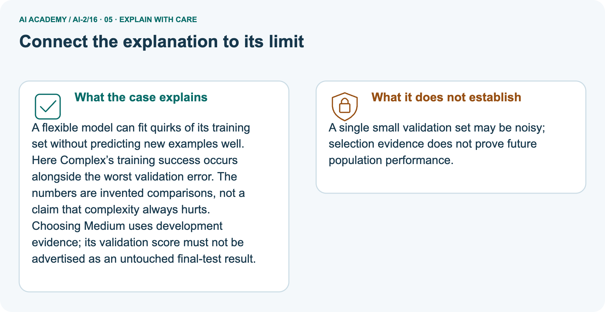

AI Academy · Level 2 · Grade 7 · Week 16 · Teacher guide
Overfitting Intuition
Learn to understand, design, build, test and explain AI systems responsibly.
Project: Transparent Book Recommender
THE CONNECTED WEEK
Teach model choice as an evidence-based development decision.
Provide raw validation predictions, distinguish the two comparisons and reserve the new tie case for assessment.
Keep one habit: Require the decision rule and remaining uncertainty beside every selected model.
Main lesson · Section 1
Prepare this connected week
Use one main plan and keep practice separate from the independent first attempt.
Learning goal and precision
Primary target: Compare training and validation evidence for model capacity
Teach two 45-minute sessions. This week focuses on overfitting and model capacity. Model the worked example first, collect the new W 4 case independently before feedback, and use the fresh retry to check transfer.
Award credit for traceable reasoning and bounded claims, including justified uncertainty.
By the end, I can use development performance rather than training fit alone to choose model complexity.
What to prepare
Use the supplied scenario, student illustrations and blank paper. For numeric work, offer counters or a calculator after learners show the setup. Fictional records are supplied; personal data and paid accounts are unnecessary.
Case exposure check: this source example appears in ai-2/16, ai-4/27, ai-4/30. Reuse a familiar case for recall or modelling; verify that the case used to assess transfer has not already received feedback.
Printed student lesson and workbook
Paper, pencils and a calculator for fractions
The fictional examples and a blank evidence table
Saved classroom project records for critique; no personal student dataset required
Main teaching plan
| Session | Sequence and minutes | Resources |
|---|---|---|
| Session 1 · Understand · 45 min | 0–7: recall and prerequisite; 7–15: inspect the concrete case and predict; 15–30: teacher models the worked trace; 30–40: learners explain a step using the text and visual; 40–45: check the core idea. | Use Your mission, Notice the evidence, See how it works, Compare the cases, Words that unlock the idea and Follow a worked example; record the brief recall in the workbook. |
| Session 2 · Practise · 45 min | 0–5: retrieve the procedure; 5–15: W2 completion practice; 15–23: explain and check with a partner; 23–30: each learner answers the misconception check; 30–40: targeted reteaching or a harder variation; 40–45: prepare the investigation. | Use Find and repair a mistake, Practise together, Run the investigation and Build your understanding; use the matching workbook W2 and misconception check. |
| Session 3 · Investigate and transfer · 45 min | 0–5: retrieve the decision rule; 5–20: investigate or trace; 20–30: start the independent case; 30–38: connect the project; 38–43: act on feedback; 43–45: plan the return check. | Use Run the investigation, Connect your project, Show what you know, Study a complete case and Try a new case independently. Allow extra time for the full task set. Use a coding lab only when this week actually provides one; Your lesson route is the planning section. |
This is a starting allocation of 135 minutes, not a validated duration. Preserve all named topics. Schedule extra time for connected examples, the full investigation, independent cases and project building.
Repeated copies of a case share one recorded attempt; they are not new evidence.
Opening retrieval and readiness
Without opening the old lesson, explain one key idea from Choose Informative Questions. Give an example and a mistake that the idea helps you avoid.
Look for: Fit a root question and leaf predictions from training examples
Reference example, not the only acceptable wording: The root asks near, with branches 0 and 1. Leaves predict clear for 0 and blocked for 1. Depth is one.
Training labels determined both leaf majorities and the error comparison that selected near rather than tall.
Without opening the old lesson, explain one key idea from Types of Classification Error. Give an example and a mistake that the idea helps you avoid.
Look for: Build a labelled confusion matrix from matched reference and prediction pairs
Reference example, not the only acceptable wording: Reference clear/predicted clear contains V1,V2: 2. Clear/blocked contains V3: 1. Blocked/clear contains V4,V5: 2. Blocked/blocked contains V6,V7,V8: 3. Matrix [[2,1],[2,3]].
Without opening the old lesson, explain one key idea from Human Classifier Simulation. Give an example and a mistake that the idea helps you avoid.
Look for: Construct a classifier with a stated input format, selected rule and recorded output
Reference example, not the only acceptable wording: Require a present height, unit cm, a whole number and range 1 through 10 inclusive.
For example, 7 cm is accepted; blank is missing, 60 mm has the wrong unit and 11 cm is outside the range. Fractional values such as 4.5 cm also fail.
The contract defines accepted inputs; it does not list only the fitting records or establish prediction correctness.
No; it may fit peculiarities of the training sample.
Earlier wording, alternatives and picture transcripts
Teach the learning cycle
Retrieval answer guidance
Choose Informative Questions
Types of Classification Error
Human Classifier Simulation
Use the student module and workbook section with this exact week title. The worked case, independent question and answers below form one aligned lesson sequence.
What the learner must demonstrate
Rule A memorises eight training IDs and gets 8/8 training, 2/8 validation. Rule B uses genre and gets 6/8 training, 6/8 validation. Which is preferable on this evidence, and what test remains?
Concept to explain
A rule that memorizes examples may fail on new cases.
| Term | Meaning |
|---|---|
| overfitting | Adapting too closely to development examples so performance does not transfer well to new relevant cases. |
| generalize | Perform usefully on new relevant cases beyond those used to develop a system. |
| complexity | The amount of structure, work or resources a method requires, measured in a stated way. |
| exception | A condition that requires handling outside the usual path. |
Prepare the class
This compact option is not the full-week schedule. Use the main teaching cycle and allow extra sessions for the investigation, independent work and project.
Allow 80 minutes: recall 8; explanation 12; worked demonstration 15; guided practice 20; independent assessment 15; project and reflection 10. Extend the lab into a second session when needed.
Preparation for the connected explanation
Readiness answer
End goal for the pictorial case
This added worked case illustrates the week’s main idea. Retain all original and connected topics; schedule its practice within the teaching cycle.
Main lesson · Section 2
Teach the validation choice with explicit units and records
Separate the two worked comparisons and preserve final-test independence.
State model capacity and the fictional-data scope
A more flexible model can represent complicated relationships and accidental details. Capacity can help when there is enough relevant evidence, but perfect training performance is not the goal.
Compare training and validation using the same metric while checking leakage and representativeness.
Use fictional classroom data throughout this investigation. Keep the task, units, reference labels and data split visible as you reason.
Earlier weeks supplied the model-building process; this week examines overfitting and model capacity.
Define MAE and the lowest-validation rule
MAE means mean absolute error: find the size of each prediction mistake without its plus or minus sign, then average those sizes. Lower MAE means smaller average mistakes in the stated units. On the same regression split, a constant has training MAE 5 and validation 6, a line has training 2 and validation 3, and a highly flexible curve has training 0 and validation 8. Under smallest validation MAE, choose the line.
The curve has the lowest training loss but the worst validation result.
Read the opening comparison
| Candidate | Training MAE (pages) | Validation MAE (pages) |
|---|---|---|
| Constant | 5 | 6 |
| Line | 2 | 3 |
| Flexible curve | 0 | 8 |
Provide the raw validation audit records
| Validation ID | Reference pages | Constant prediction | Line prediction | Flexible prediction |
|---|---|---|---|---|
| V1 | 10 | 22 | 13 | 18 |
| V2 | 14 | 22 | 17 | 22 |
| V3 | 18 | 22 | 21 | 26 |
| V4 | 22 | 22 | 25 | 30 |
Collect the gap-only explanation
Introduce the separate pictured comparison
A fictional project compares three book-length prediction models on the same development sets.
Mean absolute errors in pages: Simple training 5, validation 6; Medium training 2, validation 3; Complex training 0, validation 7.
Select lowest validation error; untouched final tests are not used for selection.
Trace selection and its limits


A flexible model can fit quirks of its training set without predicting new examples well. Here Complex’s training success occurs alongside the worst validation error.
The numbers are invented comparisons, not a claim that complexity always hurts. Choosing Medium uses development evidence; its validation score must not be advertised as an untouched final-test result.
A single small validation set may be noisy; selection evidence does not prove future population performance.
Interpret a better flexible-model development score
Change: Complex’s validation error becomes 2 on a newly documented, fair development comparison.
Prediction: The stated rule now selects Complex.
Reason: The rule compares validation errors; it does not ban complex models.
Ask for evidence rather than a stronger claim
Before continuing, underline the decision rule and circle the evidence that supports the conclusion. Explain the example to a partner without replacing the counts or conditions with a stronger claim.
Keep the distinction between an observed result and a proposed next step.
Use the diagram and verbal explanation together. Ask learners to match a sentence to a specific visual step; do not assign learners fixed visual or auditory learning styles.
Cover the result. Ask learners to name the inputs and predict the next step. Uncover one step, connect the icon to the actual procedure, and explain its evidence. Then change the supplied condition and compare.
The picture is a representation; it does not document execution of a real AI model.
Earlier wording, alternatives and picture transcripts
Explain the mechanism
Input → Process → Output
Trace the information. At each stage, ask what changed and how you could test it.
Which stage could fail even when the other two are correct? Explain:
Predict first. Then check each step. A correct answer without visible reasoning is incomplete evidence.
1. Simple rule: difficulty ≤ reader level + 1.
2. Memorized rule: seven title-specific exceptions.
3. Both fit the seen books; only new books reveal generalization.
4. Prefer the simplest rule that performs well on fair validation cases.
Recalculate, retrace, or restate the reasoning in your own representation:
CHECK Did the evidence answer the exact question? Did the total, path, or source record stay consistent?
Concrete teaching case
Rule A memorises six training book names. It scores 6/6 familiar and 2/6 new. Rule B uses relevant traits but is untested.
What does the evidence support?
Exact explanation to model
A shows weak transfer. B might generalise better but requires testing; simplicity is not proof.
Explain the added worked example
Key terms
| Term | Meaning |
|---|---|
| Capacity | Flexibility of a model to represent patterns |
| Overfitting | Learning details that fail to generalize well |
| Underfitting | Failing to capture useful structure |
| Generalization | Performance on relevant unseen examples |
Model the reasoning aloud
Use the complete worked example below before asking learners to complete W2. Reveal a small part, invite a prediction, then explain the deciding step.
These teacher notes contain solutions; do not reveal the independent case answer during modelling.
Overfitting and model capacity at a glance
| Thinking move | Teacher prompt |
|---|---|
| Plan | What is given? What is the question? Which procedure fits these facts? |
| Do | Point to each input and intermediate step in the worked trace. Name the rule that allows the next step. |
| Check | Does the output answer the question? Which assumption or limitation prevents a larger claim? |
A pictorial worked case: Overfitting Intuition
The facts we will use


Read the picture one step at a time
Why this result follows
What this example does not establish
Change one thing in the pictured case
Ask while showing the picture
Main lesson · Section 3
Guide the reasoning, then remove help
Collect a response from each learner before discussing the worked key.
Prompt before revealing
Completion task: Does a training-validation gap alone prove overfitting?
Expected reasoning and fading help
Teacher check: Teacher explanation: No. It is consistent with overfitting but may also reflect shift, data quality or split problems.
Start by identifying the given inputs together. Leave the intermediate steps blank. If needed, model one step, then withdraw that help on the next step. Move to a full trace only when the partial trace is understood.
For partners, alternate explainer and checker; collect a response from every learner before discussion.
Check the misconception before discussion
Use the worked case for Overfitting and model capacity. Proposed explanation: “A final answer is enough”. Decide whether this explanation is supported.
Point to the step or supplied fact that decides; explain your repair if needed.
Expected correction: Ask for the relevant counts, units, procedure or saved record. For this week: Choose the line with validation MAE 3. The curve training MAE 0 does not compensate for validation MAE 8.
Collect explanations, not only yes/no votes. If a misunderstanding is common, re-model the relevant step for the class.
If it affects a few learners, give a short targeted group explanation while others solve a more demanding variation.
Use the pictorial check
Does zero training error justify choosing Complex in the original record?
No. The declared criterion is validation error; Medium’s 3 is lowest, while Complex’s validation error is 7.
Changed-case reasoning: The stated rule now selects Complex. The rule compares validation errors; it does not ban complex models.
Collect each learner’s explanation before discussion. Use the first missing connection between input, deciding step and result to choose support. This question is worked-case practice, not fresh mastery evidence.
Keep each learner explaining
Ask: Which facts are given, and which would we have to assume? Learners mark relevant details before discussing answers.
Say: Predict first. Show the rule, information path or calculation that would produce the result. A correct guess is not yet an explanation.
In pairs, one learner solves while the other checks evidence; exchange roles. Remove the worked answer before independent assessment.
Earlier wording, alternatives and picture transcripts
Demonstrate and guide practice
Board sequence
Write the given facts: Rule A memorises six training book names. It scores 6/6 familiar and 2/6 new. Rule B uses relevant traits but is untested.
Write the question to explain: What does the evidence support?
Reveal after predictions: A shows weak transfer. B might generalise better but requires testing; simplicity is not proof.
Use the earlier changed question as optional later practice. Reserve Apply independently for the first independent attempt before hints or feedback.
Classroom dialogue
Reveal reasoning one step at a time. Explain why a tempting alternative fails. Write units and denominators for arithmetic, trace conditions for decisions, and identify supporting sources for claims.
Model these guided questions
Guided response: No. It is consistent with overfitting but may also reflect shift, data quality or split problems.
Exit response: Check data provenance, split grouping, label quality and repeated development results; inspect representative residuals without using final test feedback to tune.
Case-specific teaching sequence
| Stage | Teacher action |
|---|---|
| Session 1 start to 7 minutes | Use the prerequisite question: Can a zero training error guarantee good validation performance? Check the explanation before proceeding. |
| 7 to 18 minutes | Read the opening and model the worked evidence. Ask students to identify capacity in context. |
| 18 to 32 minutes | Complete W 1 and W 2 with support: select from evidence; interpret a gap. Require the evidence, not only the final response. |
| 32 to 45 minutes | Read the visual row by row. Collect the guided explanation and compare reasoning in pairs. Connect each conclusion to the stated evidence. |
| Session 2 start to 8 minutes | Retrieve the distinction between capacity and overfitting. Invite a counterexample to an overconfident claim. |
| 8 to 20 minutes | Discuss the application and complete W 3: Describe one fair next development comparison. |
| 20 to 35 minutes | Collect W4 independently before giving hints. Assess these outcomes: Compare training and validation evidence for model capacity; Explain overfitting without assuming every gap proves it. Record any support used. |
| 35 to 45 minutes | Use W 5 and the exit response to assess limits. Give targeted feedback, then the fresh retry. Save evidence of independent understanding. |
Reduce help deliberately
Individual reasoning check
Pictorial practice question
Reasoned teacher answer
Main lesson · Section 4
Run the supplied investigation
Keep expected results, observed paper traces and remaining limits distinguishable.
Supplied materials and answer guidance
Four-book audit: Constant absolute errors12,8,4,0 sum24/4=6pages; Line3,3,3,3 sum12/4=3; Flexible8,8,8,8 sum32/4=8. Choose Line under smallest validation MAE; training summaries are supplied rather than recomputed. Separate pictured comparison selects Medium3 versus6/7; a hypothetical Complex validation2 would change that selection. Do not merge those records or claim simpler always wins. Inspect data quality, grouping, shift and repeated development results before diagnosing memorised noise. Reserve A/B/C for independent W4.
Run and record
Predict → Test → Record → Explain
Keep expected and actual results separate. Surprises are useful data when recorded honestly.
Audit the supplied four-book validation predictions: retain each absolute error, sum and denominator, compare with the supplied training summaries and explain a controlled next step. No sealed-card dataset or real model fitting is supplied for this investigation.
What did the hardest test teach you that the normal test did not?
Keep an inspectable record
| Record | What to capture |
|---|---|
| Input or evidence | Exact data, instruction or claim |
| Expected result | Answer or safe fallback declared before the run |
| Observed result | Actual result, including errors |
| Explanation | Rule, calculation or evidence explaining the outcome |
| Next test | One justified change and a new prediction |
Diagnose the first misunderstanding
A final answer is enough: Ask for the relevant counts, units, procedure or saved record. For this week: Choose the line with validation MAE 3. The curve training MAE 0 does not compensate for validation MAE 8.
A stronger claim makes a stronger project: Check data provenance, split grouping, label quality and repeated development results; inspect representative residuals without using final test feedback to tune.
The new case can be copied from the example: The independent task changes the evidence. Require a fresh explanation: B wins the validation tie by the declared simplicity rule.
C is not selected merely for its zero training error.
Choose support from the response
| What the response shows | Next teaching action |
|---|---|
| Missing or misread facts | Read the case aloud, mark supplied versus unknown facts, and let the learner restate it. |
| Wrong procedure | Return to the deciding step in the worked case. Contrast it with the proposed incorrect explanation. |
| Arithmetic or implementation error | Trace intermediate values or lines; preserve the first mismatch and retry that step. |
| Correct result without a reason | Ask for a trace and a changed case before marking independent understanding. |
| An unsupported wider claim | Ask which supplied evidence supports the claim and which further observation would be needed. |
Offer an oral explanation, drawing, enlarged visual or fewer examples when that removes a reading/writing barrier. Keep the same reasoning goal.
Stretch secure learners by changing a boundary or assumption and asking them to defend the effect, not simply by assigning more of the same questions.
Earlier wording, alternatives and picture transcripts
Run the weekly evidence lab
Words You Can Use to Reason
A definition matters when you can recognize the idea, use it, and contrast it with a near-miss.
Make the lab runnable
Use the supplied investigation for shared practice. Keep predictions and observed paper-trace results separate. Reserve Apply independently for the individual first attempt before feedback; do not use the reserved case as a paired lab task.
Diagnose and reteach
For guessing, return to given facts and request a trace. For vocabulary without application, use one example and one non-example. For arithmetic errors, check the setup before the calculation.
Finish with a different uncoached case before recording mastery.
Address these additional misconceptions
Match the support to the first error
Main lesson · Section 5
Assess the selected new case
Keep this key until after the first attempt; accept valid alternatives with defensible reasoning.
Selected independent question and key
Selected case: Models A training 4 validation 5, B training 1 validation 2, C training 0 validation 2. Lowest validation MAE then simpler; B is simpler than C. Choose and justify.
Teacher explanation: B wins the validation tie by the declared simplicity rule. C is not selected merely for its zero training error.
Judge explanation, trace and limits
| Dimension | Evidence required |
|---|---|
| Explanation | Names the applicable idea or procedure and ties it to the supplied facts. |
| Trace and result | Preserves the given inputs and shows the relevant intermediate steps; distinguishes a prediction from an observed execution. |
| Limits | States the assumptions, missing evidence or conditions under which the result would change. |
Record each dimension as not yet, with support, or independent. Accept a valid alternative procedure with a defensible trace.
Do not penalise an honestly recorded model failure if the learner correctly explains its evidence and limits.
Give one usable repair action
Name the earliest unsupported step and give one action to repair it. Have the learner make that repair now and explain why. Then assess the relevant skill on a fresh, fully specified case.
Confirm it was not previously practised with feedback; solve and check the new case before assigning it. A follow-up design prompt is a starting brief, not automatically an equivalent test.
W1 Select from evidence
Choose among the three worked candidates and explain the training trap.
Teacher explanation: Choose the line with validation MAE 3. The curve training MAE 0 does not compensate for validation MAE 8.
W2 Interpret a gap
Does a training-validation gap alone prove overfitting?
Teacher explanation: No. It is consistent with overfitting but may also reflect shift, data quality or split problems.
W3 Propose a controlled change
Describe one fair next development comparison.
Teacher explanation: Compare a simpler curve against the current curve on the same validation rows, retaining the same metric and training-only fitting; log the change.
W5 Limit a diagnosis
What extra evidence would you inspect before concluding a model memorized noise?
Teacher explanation: Check data provenance, split grouping, label quality and repeated development results; inspect representative residuals without using final test feedback to tune.
Earlier wording, alternatives and picture transcripts
Assess and explain the answers
Worked case answer
A shows weak transfer. B might generalise better but requires testing; simplicity is not proof.
Additional transfer practice question
Rule A memorises six training book IDs. Rule B uses a relevant topic feature. Why might A fail on a new ID? What test is needed?
Reasoned practice answer
A has no learned relationship for the new ID beyond memorised records. Test both on unseen books with correct labels; B's relevance is promising but does not guarantee success.
What counts as evidence
| Criterion | 0 points | 1 point | 2 points |
|---|---|---|---|
| Result | Incorrect or absent | Partly correct | Correct with necessary conditions |
| Reasoning | No supporting trace | Some steps | Clear mechanism, calculation or source support |
| Limit | Overclaims certainty | Vague limitation | Relevant uncertainty or missing fact |
| Transfer | Copies without adapting | Adapts with prompts | Solves a changed case independently |
Use 6/8 as a classroom checkpoint, with 2 required for both Result and Reasoning. This is a proposed teaching rule, not a validated certification threshold.
Do not count a coached answer as independent mastery; correct unsafe or unsupported claims regardless of total.
Feedback
Ask the learner to find the evidence that challenges this claim: “Perfect training results guarantee unseen performance.” Keep the first attempt and an uncoached retry separate.
Original transfer answer
B has better validation performance and is the stronger candidate here. A's large gap suggests poor transfer.
Evaluate the selected rule on fresh final cases; neither simplicity nor one small validation set proves universal superiority.
Explanations for the additional workbook examples
W1 Select from evidence
W2 Interpret a gap
W3 Propose a controlled change
W4 Apply independently
Models A training 4 validation 5, B training 1 validation 2, C training 0 validation 2. Lowest validation MAE then simpler; B is simpler than C. Choose and justify.
Teacher explanation: B wins the validation tie by the declared simplicity rule. C is not selected merely for its zero training error.
W5 Limit a diagnosis
Assess independent transfer
Selected case answer
Feedback that the learner uses
Main lesson · Section 6
Connect, adapt and return
Retain the project evidence and revisit the reasoning on a changed case.
Project evidence to keep
Avoid title-by-title patches; improve features or thresholds that transfer.
Keep the decision, input, result, explanation and remaining limitation in the project evidence record. Retrieve this record next week rather than restarting the project.
Compare recommender revisions on fixed development cases, reserving new cases for the final presentation.
Support while preserving the reasoning goal
Trace one record or condition at a time with counters and labelled columns. Stretch: introduce a tie, boundary or missing field and declare its handling policy before rerunning.
Provide a blank evidence table and allow a verbal explanation before writing. Highlight the given conditions without supplying the W 4 conclusion. Use capacity and overfitting in full sentences.
Extension: alter one condition in the worked example and explain which conclusion changes and which remains supported.
For independent W 4, require: B wins the validation tie by the declared simplicity rule. C is not selected merely for its zero training error.
Fresh retry training/validation D 3/4 E 0/7 F 2/3: choose F under lowest validation loss. Explain why E is not automatically best. Mark each criterion as independent, supported or not yet demonstrated.
Reassess the reasoning after feedback; do not replace the first attempt silently.
Plan the delayed check
Suggested return points in this level: ai-2/17, ai-2/19, ai-2/22. Use actual classroom dates, adjusting for holidays and gaps. One, three and six teaching weeks are scheduling choices, not a claimed optimal spacing.
At a delayed check, ask for the idea from memory and a changed application. Compare with the earlier independent response and record support used.
For a new level, revisit the previous capstone before checking the new prerequisites.
| Record | Teacher evidence |
|---|---|
| Learner code and date | |
| Concept and case used; prior exposure | |
| Explanation / trace / limits | |
| Support and first repair | |
| Changed case and delayed outcome | |
| Next teaching action |
Use the evidence to choose reteaching or the next step. A completed page, confidence rating or attractive project does not by itself demonstrate understanding.
Bridge to next week
Ask for one decision the learner can now justify and one situation requiring more evidence or human review. Confidence ratings are separate from correct independent performance.
Next: Week 17: Noise and Outliers. Retrieve today’s evidence and identify what carries forward and what is new.
Next is Week 17: Noise and Outliers. Carry forward the saved split, metric and comparison record; investigate unusual observations without assuming every large error is invalid data.
Earlier wording, alternatives and picture transcripts
Connect and extend learning
Transparent Book Recommender
Support and stretch
Exit reflection
Bridge to the next week
Support and fresh reassessment
Plan the delayed return
Project evidence from this case
Reference bank and extra practice
Choose the reference that helps your next step.
Reference: alternative planning checklist
Reference · Section 7
Reference: alternative planning checklist
Use as a reminder alongside the main route rather than teaching the cycle twice.
Preparation and schedule
Teaching target: Compare training and validation evidence for model capacity
Prepare the labelled worked-case picture, the matching workbook, fictional input cards and a place for individual responses. No paid AI account is required for the paper reasoning activities.
| Session | Plan | Resources |
|---|---|---|
| Session 1 · Understand · 45 min | 0–7: recall and prerequisite; 7–15: inspect the concrete case and predict; 15–30: teacher models the worked trace; 30–40: learners explain a step using the text and visual; 40–45: check the core idea. | Use Your mission, Notice the evidence, See how it works, Compare the cases, Words that unlock the idea and Follow a worked example; record the brief recall in the workbook. |
| Session 2 · Practise · 45 min | 0–5: retrieve the procedure; 5–15: W2 completion practice; 15–23: explain and check with a partner; 23–30: each learner answers the misconception check; 30–40: targeted reteaching or a harder variation; 40–45: prepare the investigation. | Use Find and repair a mistake, Practise together, Run the investigation and Build your understanding; use the matching workbook W2 and misconception check. |
| Session 3 · Investigate and transfer · 45 min | 0–5: retrieve the decision rule; 5–20: investigate or trace; 20–30: start the independent case; 30–38: connect the project; 38–43: act on feedback; 43–45: plan the return check. | Use Run the investigation, Connect your project, Show what you know, Study a complete case and Try a new case independently. Allow extra time for the full task set. Use a coding lab only when this week actually provides one; Your lesson route is the planning section. |
Practice and assessment reminders
Before class, solve the supported practice: Does a training-validation gap alone prove overfitting?
Reasoned practice answer: Teacher explanation: No. It is consistent with overfitting but may also reflect shift, data quality or split problems.
Check every learner before discussion: Use the worked case for Overfitting and model capacity. Proposed explanation: “A final answer is enough”. Decide whether this explanation is supported.
Point to the step or supplied fact that decides; explain your repair if needed.
Misconception repair: Ask for the relevant counts, units, procedure or saved record. For this week: Choose the line with validation MAE 3. The curve training MAE 0 does not compensate for validation MAE 8.
Support: read the exact case aloud, enlarge the labelled picture, supply input cards and model only the first deciding step. Accept a spoken explanation or drawing; retain the reasoning goal.
Extension: Complex’s validation error becomes 2 on a newly documented, fair development comparison. Require a prediction and a reason before comparing. Expected result: The stated rule now selects Complex.
Reason: The rule compares validation errors; it does not ban complex models.
Independent assessment: withhold the reserved answer until the learner has attempted the new case. Record support separately from correctness.
| Criterion | Not yet | With support | Independent |
|---|---|---|---|
| Explanation | Names an answer without a deciding fact | Uses a hint to link fact and decision | Explains the deciding fact in own words |
| Trace or test | Cannot connect input and result | Completes steps with prompts | Traces or tests a changed case accurately |
| Limits and revision | Claims more than evidence supports | Names a limit after a prompt | States a defensible limit and useful next test |
Project checkpoint: Test changed cases. Keep normal, boundary and failure cases; compare expected and observed results.
Use the weekly teacher answer for topic-specific reasoning. A saved progress tick is an activity record; judge mastery from the learner’s explanation and evidence.
Reference: feedback and records
Reference · Section 8
Reference: feedback and records
Use digital tools where they help retain an explanation and its evidence.
Keep practice and independent evidence separate
Use the two formative questions as supported practice, not as independent mastery scores. Discuss the deciding evidence rather than accepting a guessed selection.
The feedback comes from the reviewed public worked case. Do not reveal the separately reserved independent teacher answer until the learner has attempted that case.
Repair and portfolio records
Use the earlier worked-explanation links to address a specific missing building block, then return to the current question. Adapt this suggestion after observing the learner; it is not an automatic diagnosis.
Collect the completed-work portfolio as evidence. Record support separately from correctness, and assess explanation, trace/test and limitations. Progress ticks and quiz selections alone do not establish mastery.
Earlier wording, alternatives and picture transcripts
This week has no code block. Use this routine when a later lesson includes an executable lab.
Ask students to predict before running code. Preserve errors and actual outputs; collect a changed test and an explanation. The branch-boundary and indexing lessons deliberately include failure cases.
Reference: teach with the six pictures
Reference · Section 9
Reference: teach with the six pictures
Choose the picture for the teaching move and connect it to the explanation.
01. Overfitting Intuition: the case


A fictional project compares three book-length prediction models on the same development sets.
Supplied facts: Mean absolute errors in pages: Simple training 5, validation 6; Medium training 2, validation 3; Complex training 0, validation 7.
Select lowest validation error; untouched final tests are not used for selection.
Point to the given fact that matters most. Explain why it matters.
Teacher prompt: Point to the given fact that matters most. Explain why it matters. Ask learners to describe one label or arrow in ordinary words. Use the adjacent transcript if the image is difficult to see.
02. Follow the deciding steps
Training comparison: Complex fits training perfectly with zero error. → Validation comparison: Medium has error 3, versus Simple 6 and Complex 7. → Choose for development: Select Medium under the declared lowest-validation-error rule. → Final evaluation: Freeze the selection, then evaluate new reserved cases.
Point to each numbered stage and explain which recorded input it uses.
Teacher prompt: Point to each numbered stage and explain which recorded input it uses. Ask learners to describe one label or arrow in ordinary words. Use the adjacent transcript if the image is difficult to see.
03. Training and validation errors


Training and validation errors. Simple: Training MAE pages = 5, Validation MAE pages = 6. Medium: Training MAE pages = 2, Validation MAE pages = 3. Complex: Training MAE pages = 0, Validation MAE pages = 7.
Read the labels and values. Explain the relationship the model shows.
Teacher prompt: Read the labels and values. Explain the relationship the model shows. Ask learners to describe one label or arrow in ordinary words. Use the adjacent transcript if the image is difficult to see.
Check row/column meanings, units and denominators before discussing a difference. Supplied toy values are not real class or model results.
04. Change one thing. Trace what follows.


Original case: Freeze the selection, then evaluate new reserved cases. Changed condition: Complex’s validation error becomes 2 on a newly documented, fair development comparison.
Expected result: The stated rule now selects Complex. Reason: The rule compares validation errors; it does not ban complex models.
Predict before checking the worked changed-case result. Name what changed and what the supplied facts allow you to conclude.
Teacher prompt: Predict before checking the worked changed-case result. Name what changed and what the supplied facts allow you to conclude. Ask learners to describe one label or arrow in ordinary words.
Use the adjacent transcript if the image is difficult to see. Changed-case reasoning: The rule compares validation errors; it does not ban complex models.
05. Connect the explanation to its limit



A flexible model can fit quirks of its training set without predicting new examples well. Here Complex’s training success occurs alongside the worst validation error.
The numbers are invented comparisons, not a claim that complexity always hurts. Choosing Medium uses development evidence; its validation score must not be advertised as an untouched final-test result.
Limit: A single small validation set may be noisy; selection evidence does not prove future population performance.
Explain the case, then point to a limit on the claim.
Teacher prompt: Explain the case, then point to a limit on the claim. Ask learners to describe one label or arrow in ordinary words. Use the adjacent transcript if the image is difficult to see.
Keep the stated scope: A single small validation set may be noisy; selection evidence does not prove future population performance.
06. Make the idea visible in your project


Compare recommender revisions on fixed development cases, reserving new cases for the final presentation. Draw your input, deciding step, result and limit.
Supported question: Does zero training error justify choosing Complex in the original record?
Draw your project trace and justify the deciding step using evidence.
Teacher prompt: Draw your project trace and justify the deciding step using evidence. Ask learners to describe one label or arrow in ordinary words. Use the adjacent transcript if the image is difficult to see.
Supported practice key: No. The declared criterion is validation error; Medium’s 3 is lowest, while Complex’s validation error is 7.
Earlier wording, alternatives and picture transcripts
Use one picture at a time. Hide a worked result before asking for a prediction, then reveal it for feedback. These are supported teaching cases; retain the separate independent assessment for a fresh first attempt.